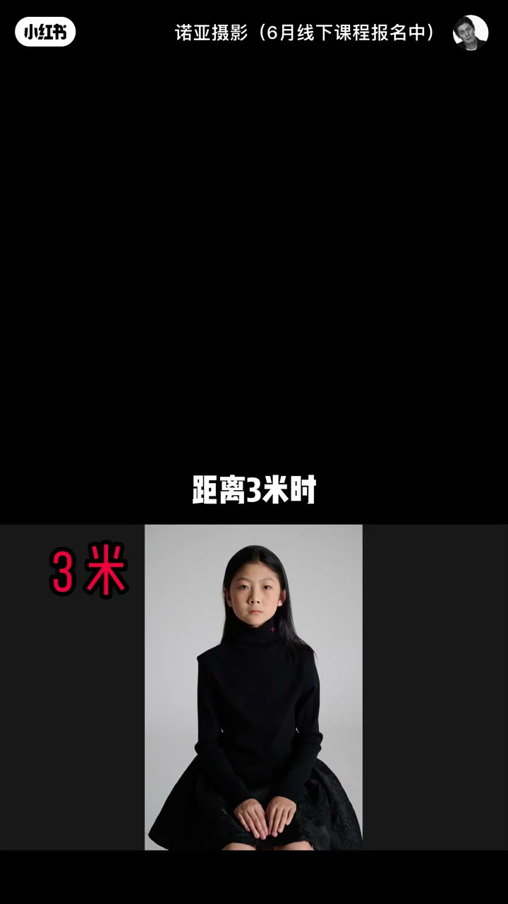
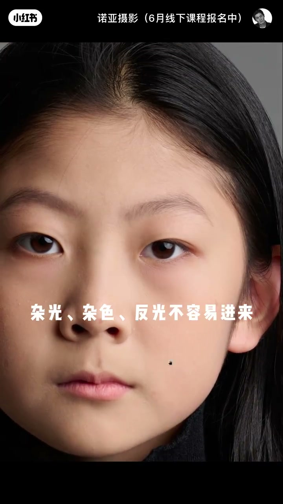

内容要点
一支 84 秒的人像布光教学：博主固定模特位置，给闪光灯装上八角柔光箱，分别在 1 米、2 米、3 米距离各拍一张，用测光表保证相同曝光值，对比不同距离的光线效果，并给出实战推荐距离。
知识结构
[00:00→00:26]
实验设置
固定模特，八角柔光箱分别放 1 米、2 米、3 米距离各拍一张，配合测光表保证相同曝光。
[00:26→00:48]
距离对比结果
1 米光充足柔和背景暗；2 米扩散大照亮背景面部对比下降；3 米光变硬阴影锐利覆盖广。
[00:48→01:24]
推荐距离
从人像实战考虑通用稳定好控制，推荐 1.2-1.8 米，光线柔和不死板、曝光易控、背景影响小。
总结
柔光箱距离决定人像质感：1 米光线足且柔但背景暗，2 米扩散大背景亮，3 米光变硬阴影锐利；实战推荐 1.2-1.8 米，兼顾柔和、立体感、曝光可控与背景干净。
实验：1/2/3 米对比
固定模特位置，给闪光灯装上八角柔光箱，分别放在 1 米、2 米、3 米距离各拍一张。每次移动灯的位置都用测光表测光，确保三张照片曝光值相同。
结果：距离与光线质感
1 米时照射人物光线非常充足也很柔和，光主要打在人身上背景比较暗；2 米时光扩散范围变大照亮更多背景，面部对比度下降；3 米时光变硬、阴影边缘更锐利，覆盖范围更广背景更亮。

实战推荐：1.2-1.8 米
从人像实战角度考虑通用、稳定、好控制，推荐 1.2-1.8 米。这个距离光线柔和不死板，能拍出立体感和自然肤色，曝光更容易控制，光效集中，对背景影响小，杂光杂色反光不容易进来。
